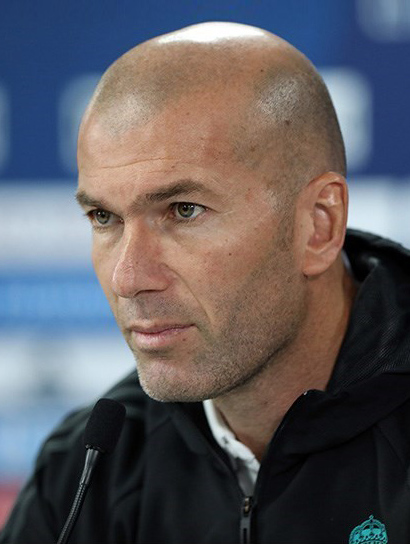

Zinedine Zidane – The Maestro of Midfield
Full Name: Zinedine Yazid Zidane
Date of Birth: June 23, 1972
Country: France 🇫🇷
Position: Attacking Midfielder
Clubs: Cannes, Bordeaux, Juventus, Real Madrid
Career Highlights
- FIFA World Cup Winner (1998) – scored 2 goals in the final
- UEFA Euro Champion (2000)
- UEFA Champions League Winner (2002 with Real Madrid)
- Ballon d'Or Winner (1998)
- FIFA World Player of the Year (3 times)
- Won 3 Champions League titles as a manager with Real Madrid
Playing Style
- Elegant dribbling and calm control under pressure
- Pinpoint passing and vision
- Powerful long-range shots and headers
- Master of the “roulette” skill move
- Big-match brilliance
Quote
“Zidane is the greatest player of his generation.” – David Beckham
Fun Facts
- Born in Marseille, France to Algerian parents
- Scored a famous volley in the 2002 UCL Final
- Sent off in the 2006 World Cup Final for a headbutt
- Highly successful coach with Real Madrid
- Nicknamed "Zizou"

← Back to Football Index